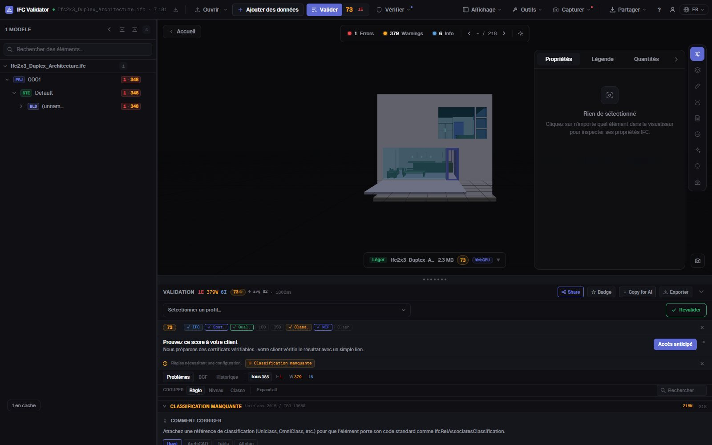
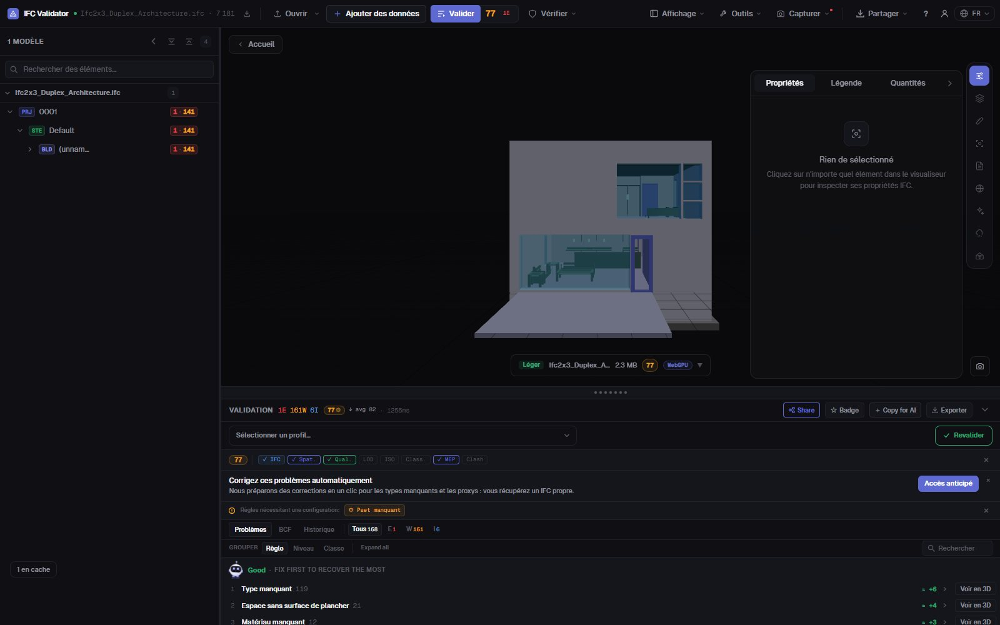

Vérifier la classification IFC
Uniclass, OmniClass, Psets
Trouvez chaque élément d’un IFC sans référence de classification — de n’importe quel système ou seulement ceux exigés par votre convention BIM — ainsi que les jeux de propriétés manquants, les valeurs vides et les noms hors convention. Chaque constat est listé, compté et montré en 3D.
Vérifier la classification — gratuit →Sans compte · Rien n’est envoyé · Dans votre navigateur · Gratuit

Ce que vous pouvez faire
Contrôles de classification et de données pour une livraison
Ce que vérifie un coordinateur BIM avant d’accepter une maquette dans la GED.
Classification manquante
Chaque élément physique sans IfcClassificationReference, de tout système ou seulement de ceux indiqués (Uniclass 2015, OmniClass, CCS, NL-SfB…).
Classification par IDS
Chargez un fichier IDS buildingSMART pour exiger un système et un code par type d’élément ; la facette classification d’IDS est entièrement prise en charge.
Validation des Psets
Jeux de propriétés obligatoires manquants et propriétés vides, par classe d’élément.
Convention de nommage
Comparez les noms aux modèles de votre convention BIM, plus les noms vides et en double (renommables en bloc).
Visible en 3D
Isolez dans la maquette les éléments en défaut pour chaque contrôle, le reste en transparence, et allez à chacun.
Exportable
Envoyez les constats en BCF à l’auteur, ou téléchargez un CSV, un rapport JSON ou un rapport de livraison imprimable.
Captures

FAQ
Questions fréquentes
Comment vérifier la classification d’une maquette IFC ?
Ouvrez l’IFC dans IFC Viewer Online et lancez la validation avec la règle de classification active (les profils ISO 19650 et coordination l’incluent). Elle liste chaque élément sans référence de classification et les montre en 3D. Pour exiger un système et un code par type d’élément, chargez un fichier IDS.
Quels systèmes de classification sont pris en charge ?
Tout système enregistré en IfcClassification / IfcClassificationReference : Uniclass 2015, OmniClass, CCS, NL-SfB, CoClass, MasterFormat ou le vôtre. Vous pouvez accepter tout système ou seulement ceux indiqués.
Les jeux de propriétés sont-ils aussi vérifiés ?
Oui. Des règles signalent les Psets obligatoires manquants et les valeurs vides, et un fichier IDS peut exiger des propriétés, des types et des valeurs précis.
La maquette est-elle envoyée ?
Non. Le contrôle s’exécute dans votre navigateur en WebAssembly ; l’IFC ne quitte pas votre ordinateur. Gratuit pour tout usage, sans compte.
Puis-je partager les résultats avec l’auteur de la maquette ?
Oui : exportez en BCF 2.1 pour son logiciel, en CSV ou JSON, ou en rapport de livraison imprimable.
Sachez ce qui n’est pas classé avant que la maquette arrive dans la GED.
Classification · Psets · Nommage · IDS · BCF
Vérifier la classification — gratuit →